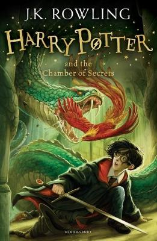

Harry Potter can’t wait for his summer to end, he’s had the worst birthday - no cards, no presents and to top it all, spending the evening pretending not to exist. Not to mention some worrying warnings from a bat-eared house elf called Dobby and a rather unfortunate incident with an enchanted, flying, Ford Anglia. Surely his second year at Hogwarts School of Witchcraft and Wizardry will be simple after all that? But all is not as it should be at Hogwarts. Harry is hearing things, strange things, venomous whispers in the shadows – and then the attacks start.